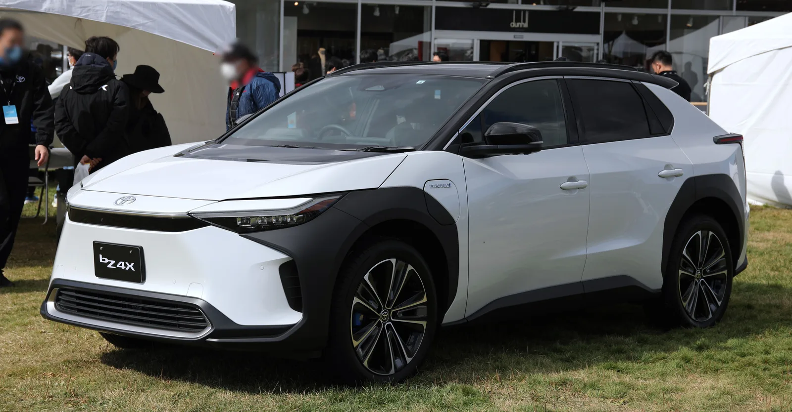
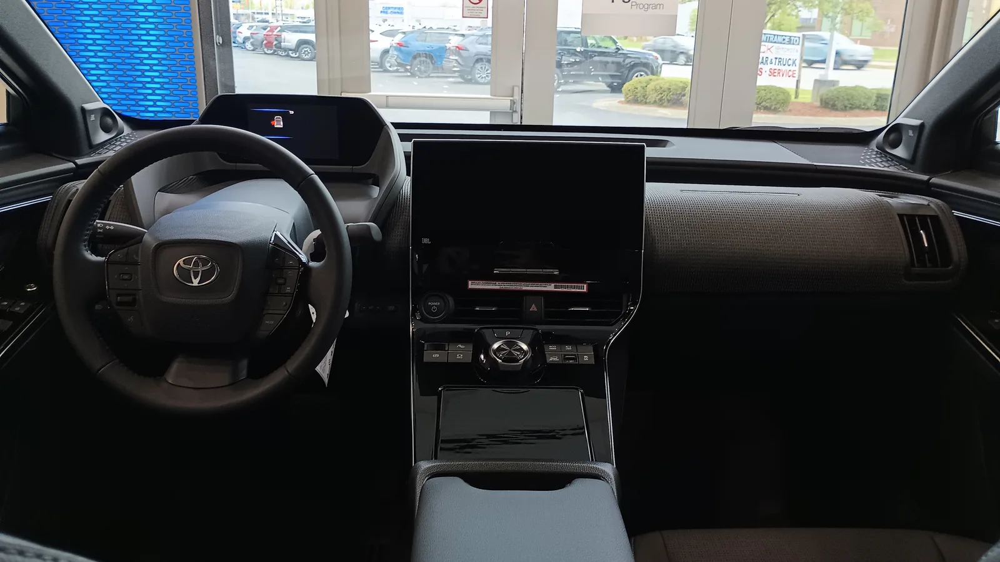
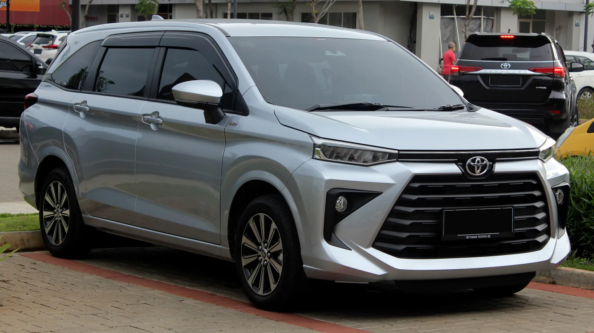
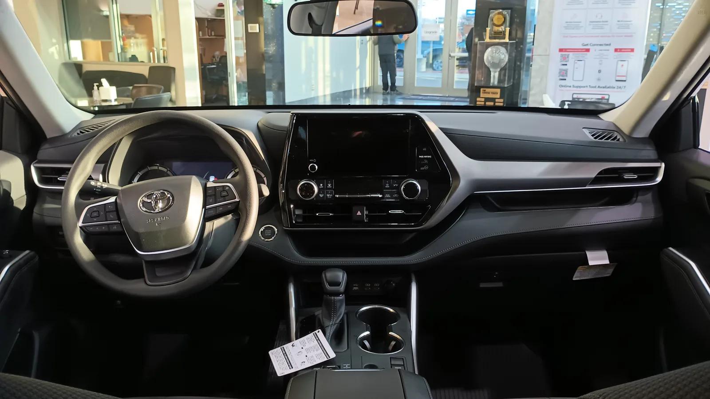

▲ 토요타 bZ4X. 이번 특허가 실제로 이 차량에 적용된 것은 아니며, 토요타의 카메라 기반 주행보조 시스템을 갖춘 차량의 예시 이미지다 ⓒ Wikimedia Commons
토요타가 낸 특허 하나가 눈길을 끕니다. 운전자가 창밖 풍경을 잠시 바라보기만 해도, 차량이 알아서 그 장면을 촬영해 스마트폰으로 보내주는 기술입니다.
아직 실제 양산이 확정된 기능은 아닙니다. 하지만 운전 중 스마트폰을 들어 사진을 찍다가 생기는 사고를 줄일 수 있다는 점에서, 특허 단계임에도 여러 매체가 주목하고 있습니다.
1. 특허 내용 요약 — 무엇을 하는 기술인가
토요타가 미국에 출원한(아직 등록되지 않은) 이 특허의 정식 명칭은 "운전자 관련 도로 풍경 정보 포착을 위한 시스템 및 방법"입니다. 쉽게 말하면, 차량을 운전자의 개인 사진기사로 만드는 기술입니다.
운전자가 창밖의 어떤 풍경—노을, 특이한 건물, 지나가는 동물 등—에 시선을 두면, 차량이 이를 감지해 자동으로 사진을 찍고 저장해 줍니다. 손으로 스마트폰을 들어 조작할 필요가 없다는 것이 핵심입니다. 특허 문서에는 운전자가 원하는 촬영 규칙을 미리 설정할 수 있다는 내용도 담겨 있습니다. 예를 들어 "클래식카가 화면에 잡힐 때마다 자동으로 촬영"하는 식의 상시 규칙을 지정하거나, 과거 촬영 이력과 주행 맥락을 바탕으로 무엇이 "운전자에게 의미 있는 장면"인지 시스템이 스스로 추론하도록 하는 방안도 제시됩니다.
2. 작동 원리 — 시선 추적 + 외부 카메라
| 단계 | 내용 |
|---|---|
| 1 | 실내 시선 추적 카메라가 운전자의 눈동자 방향을 실시간 파악 |
| 2 | 시선이 특정 방향에 일정 시간 머무르면 "관심 있는 장면"으로 판단 |
| 3 | 토요타 세이프티 센스 등 기존 외부 카메라 중 해당 방향의 카메라가 촬영 |
| 4 | 촬영된 이미지를 차량이 아닌 운전자의 모바일 기기로 전송 |
이 방식의 핵심은 새로운 하드웨어를 크게 추가하지 않는다는 점입니다. 시선 추적 카메라는 토요타의 소프트웨어 정의 안전 시스템에 이미 쓰이는 운전자 모니터링용 카메라를 그대로 활용합니다. 이 카메라가 운전자의 머리·눈동자 위치를 추적해 정밀한 시선 벡터를 계산하고, 이를 외부 카메라가 인식한 장면과 교차시켜 별도의 수동 조준 없이도 촬영 대상을 특정하는 구조입니다. 외부 카메라 역시 토요타 세이프티 센스 등 기존 주행보조 시스템에 쓰이는 부품을 그대로 씁니다. 특허는 이미 탑재된 두 종류의 카메라를 소프트웨어로 연결하는 아이디어에 가깝습니다.

▲ 토요타 차량 실내. 시선 추적 카메라는 통상 스티어링 휠 칼럼이나 계기판 부근에 탑재된다
3. 왜 필요한가 — 운전 중 스마트폰이라는 오래된 문제
운전 중 스마트폰으로 사진이나 영상을 찍으려다 전방 주시를 소홀히 해 사고로 이어지는 사례는 꾸준히 지적돼 온 문제입니다. 손이 잠깐이라도 운전대를 떠나고, 시선이 도로에서 화면으로 옮겨가는 순간이 위험한 구간입니다.
토요타의 아이디어는 이 구간 자체를 없애는 데 있습니다. 손은 운전대에, 시선은 도로(와 풍경)에 그대로 둔 채로 촬영이 이뤄지도록 설계했습니다. 여행 중 창밖 풍경을 기록하고 싶어하는 운전자들의 수요를 겨냥한 것으로 풀이됩니다.
4. 프라이버시·데이터 이슈
다만 특허 문서에는 다소 논쟁적인 내용도 포함돼 있습니다. 스마트폰의 건강 기록이나 인터넷 브라우징 기록과 연동해, 운전자가 무엇을 찍고 싶어할지 미리 추론하는 방안까지 제시하고 있습니다.
이는 단순한 "자동 촬영"을 넘어 개인 데이터를 활용한 예측형 기능으로 확장될 수 있다는 뜻입니다. 실제 양산 단계에서는 이런 데이터 연동 범위를 두고 프라이버시 논쟁이 불가피할 것으로 보입니다. 특허 단계의 아이디어가 모두 그대로 제품화되는 것은 아니라는 점도 감안해야 합니다.
5. 다른 완성차의 카메라 활용법과 비교
| 업체·기능 | 내용 |
|---|---|
| 토요타 (특허) | 시선 추적 + 외부 카메라로 풍경 자동 촬영 |
| 테슬라 캠 모드·센트리 모드 | 상시 녹화·주차 중 감시 목적, 운전자 시선과는 무관 |
| 일부 브랜드 블랙박스 통합형 | 사고 기록·안전 목적의 상시 촬영 |
| 토요타 세이프티 센스 | 충돌 방지·차선 유지 등 안전 기능에 카메라 활용 (기존) |
기존 차량용 카메라가 대부분 '안전'과 '기록' 목적이었다면, 토요타의 이번 특허는 '감성적 경험'을 겨냥한다는 점에서 결이 다릅니다. 안전 기능 부품을 활용해 완전히 다른 용도로 확장한 아이디어라는 점이 특허의 독창성으로 꼽힙니다.

▲ 카메라 기반 주행보조 시스템을 탑재한 토요타 차량(예시). 특허는 이런 기존 외부 카메라를 촬영에도 활용하는 방식을 제안한다

▲ 토요타 하이랜더 실내. windshield 안쪽 카메라 위치가 시선 추적·전방 인식에 함께 쓰일 수 있는 구조를 보여준다
6. 정리 — 특허와 양산 사이의 거리
토요타의 '포토 어시스턴트' 특허는 시선 추적 카메라와 기존 외부 카메라를 결합해, 운전자가 손을 대지 않고도 풍경을 촬영할 수 있게 하는 아이디어입니다. 운전 중 스마트폰 조작으로 인한 주의분산을 줄이겠다는 목적이 뚜렷합니다.
다만 현재는 특허 단계일 뿐, 토요타는 어떤 양산 모델에도 이 기능을 확정하지 않았습니다. 건강기록·브라우징 기록 연동 아이디어처럼 프라이버시 논쟁을 부를 수 있는 요소도 남아 있어, 실제 제품화까지는 적지 않은 검증과 조정을 거칠 것으로 보입니다.